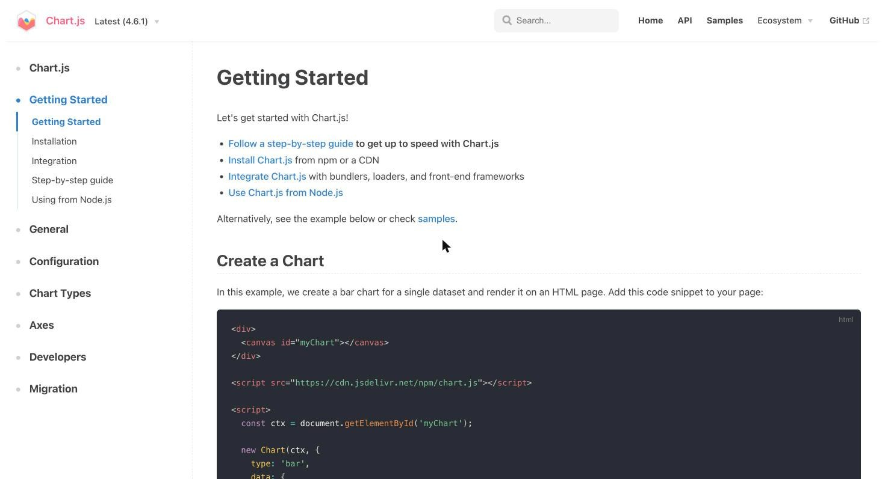
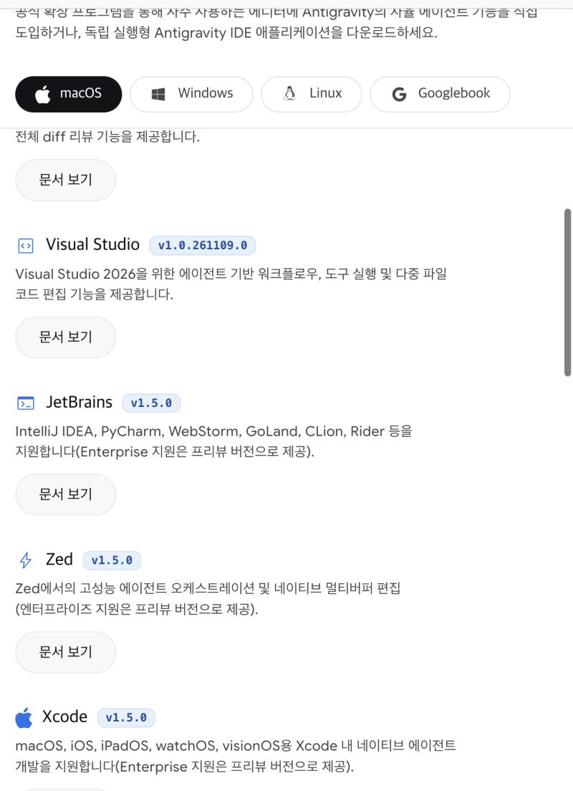
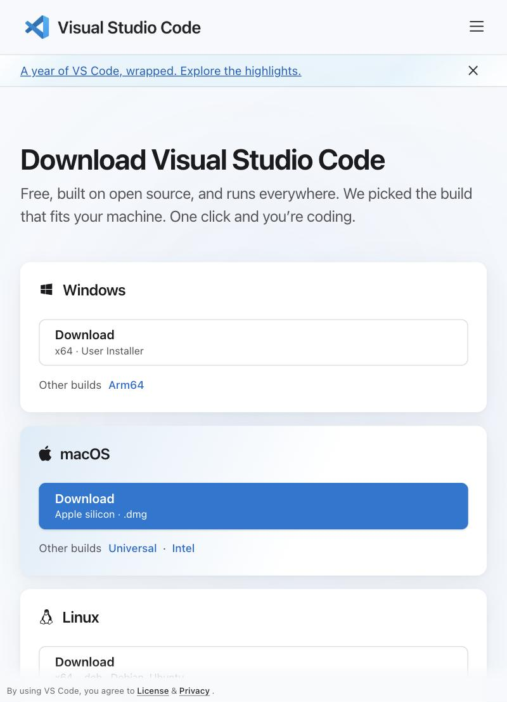

남이 만든 부품을 빌려 쓰고, 여러 개발 도구에서 같은 일을 해 봐요
어제 만든 날씨 배너를 라이브러리로 다듬고 그래프를 붙여요. 그다음 같은 폴더를 구글 안티그래비티와 VS Code에서 열어 보고, 지금까지 쓴 클로드 코드와 무엇이 같고 다른지 견줘요. 이어서 내 컴퓨터 터미널에서 클로드 코드를 직접 켜고, 마지막으로 리모트 컨트롤로 휴대폰에서 일을 이어 가요.
교육 개요
| 시간 | 09:00–18:00 (점심 12:00–13:00, 수업 8시간) |
|---|---|
| 교과 | [기본] AI 서비스 개발 · 14일차 (총 18일) |
| 교육 목표 | 라이브러리와 프레임워크의 차이를 알고 초보자용 라이브러리를 써 보며, 같은 일을 여러 개발 환경에서 해 본다. |
| 수업이 끝나면 | ① 라이브러리와 프레임워크를 비유로 설명하기 ② Tailwind와 Chart.js로 화면을 다듬고 그래프 붙이기 ③ IDE가 무엇인지 말하기 ④ 안티그래비티와 VS Code에서 같은 폴더를 열고 화면 띄우기 ⑤ 터미널(파워셸)에서 클로드 코드로 헬로 페이지 만들고 로컬 서버 띄우기 ⑥ 휴대폰에서 이어서 일하기 |
수업 전 준비
- 어제 만든 weather-banner 폴더: 내 컴퓨터에 있는지 봐요. 클라우드에서 만들었다면 클로드 코드에게 깃헙에 올려 달라고 해 두고, 오늘 내 컴퓨터로 클론해요.
- 설치 공간: 안티그래비티와 VS Code를 수업에서 함께 설치해요. 회사 컴퓨터라 설치가 막혀 있으면 미리 알려 주세요.
- 휴대폰 클로드 앱: 설치하고 로그인해 둬요. 6세션에서 써요.
타임테이블
| 시간 | 구분 | 내용 |
|---|---|---|
| 09:00–09:20 | 오늘의 단어 | 오늘의 단어 |
| 09:20–10:20 | SESSION 1 | 라이브러리와 프레임워크 |
| 10:30–12:00 | SESSION 2 | 라이브러리로 날씨 배너 다듬기 |
| 12:00–13:00 | 점심 | |
| 13:00–14:20 | SESSION 3 | 구글 안티그래비티로 같은 폴더 열기 |
| 14:30–15:40 | SESSION 4 | VS Code와 클로드 코드 확장 |
| 15:50–16:40 | SESSION 5 | 내 컴퓨터 터미널에서 클로드 코드 쓰기 |
| 16:50–17:30 | SESSION 6 | 휴대폰에서 이어서 일하기 |
| 17:30–18:00 | 정리 | 오늘 정리와 과제 |
오늘의 단어
오늘 처음 나오는 말을 먼저 짧게 짚고 시작해요.
| 단어 | 뜻 |
|---|---|
| 라이브러리 | 남이 만들어 둔 부품 모음. 필요한 부품만 골라 내 코드에서 불러 써요. |
| 프레임워크 | 앱의 뼈대와 규칙을 정해 둔 틀. 내 코드를 그 틀에 맞춰 채워 넣어요. |
| CDN | 라이브러리 파일을 인터넷 주소 하나로 바로 불러 쓰게 해 주는 곳 |
| IDE | 프로그램을 만드는 프로그램. 코드 편집기, 터미널, 미리보기를 한 창에 모아 둬요. |
| 확장(익스텐션) | IDE에 기능을 더하는 추가 프로그램. VS Code의 클로드 코드 확장처럼요. |
| CLI | 글자 창(터미널)에서 명령어를 쳐서 쓰는 프로그램. 클로드 코드의 터미널 버전이 CLI예요 |
| 리모트 컨트롤 | 내 컴퓨터에서 돌던 클로드 코드 세션을 휴대폰이나 다른 브라우저에서 이어 보는 기능 |
라이브러리와 프레임워크
개발자가 "리액트로 갈까요, 그냥 HTML로 갈까요?"라고 물을 때 기획자가 대화에 낄 수 있도록, 두 말의 차이를 비유로 잡아요.
개념1-1. 부품 상자와 집의 뼈대
| 구분 | 라이브러리 | 프레임워크 |
|---|---|---|
| 비유 | 필요할 때 꺼내 쓰는 부품 상자(망치, 경첩) | 이미 세워 둔 집의 뼈대. 방 배치를 그 틀에 맞춰요 |
| 누가 주도하나 | 내 코드가 부품을 불러요 | 틀이 내 코드를 정해진 때에 불러요 |
| 바꾸기 | 부품 하나만 빼고 바꾸기 쉬워요 | 중간에 바꾸기 어려워요. 처음에 잘 골라야 해요 |
| 지금까지 본 예 | 날씨 화면에 붙일 그래프 부품(Chart.js), 디자인 부품(Tailwind) | 구글 AI 스튜디오가 기본으로 만드는 리액트(React) 앱 |
출처: Google AI for Developers Build apps in Google AI Studio("React is the default") (2026-11-13 확인)
개념1-2. 초보자가 먼저 써 볼 만한 것
| 이름 | 종류 | 하는 일 | 이럴 때 |
|---|---|---|---|
| Tailwind CSS | 디자인 라이브러리(CSS 프레임워크라고도 불러요) | "글자 크게", "여백 넓게" 같은 짧은 이름표를 붙여 꾸며요 | 디자인을 빨리 다듬고 싶을 때 |
| Chart.js | 그래프 라이브러리 | 숫자 목록을 막대·선 그래프로 그려요 | 대시보드, 날씨·매출 그래프 |
| React | 화면 프레임워크(라이브러리) | 화면을 부품(컴포넌트)으로 나눠 만들어요 | 화면이 많고 복잡한 서비스 |
오늘은 파일 하나에 주소 한 줄로 불러 쓰는 Tailwind와 Chart.js만 써요. 설치나 빌드가 필요 없어서, 지난주처럼 깃헙 페이지스에 그대로 올려도 열려요.
참고 · 실제 서비스를 만들 때 많이 쓰는 라이브러리·프레임워크눌러서 펼쳐 보세요
오늘 실습은 주소 한 줄로 불러 쓰는 라이브러리만 써요. 사람들이 실제로 가입하고 쓰는 서비스를 만들 때는 아래 도구들을 함께 많이 써요. 대부분 React 위에서 돌아가고, npm으로 설치해서 써요.
| 목적 | 이름 (발음) | 안 쓰면 겪는 불편 | 쓰면 좋아지는 점 | 공식 홈페이지 |
|---|---|---|---|---|
| 뼈대 | React (리액트) | 장바구니 숫자 하나를 바꾸려 해도 화면 곳곳을 직접 고쳐야 해요. 한 곳을 빠뜨리면 화면마다 숫자가 달라요. | 버튼·카드 같은 블록을 한 번 만들어 여러 곳에 다시 써요. 값이 바뀌면 화면이 알아서 맞춰져요. | react.dev |
| 뼈대 | Next.js (넥스트 제이에스) | "회원가입 페이지 추가해 줘"라고 할 때마다 주소 연결, 서버 설정 같은 준비 작업이 따로 필요해요. | 폴더 하나를 만들면 페이지가 생겨요. 서버 기능도 들어 있어서 바로 서비스를 만들기 시작할 수 있어요. | nextjs.org |
| 꾸미기 | Tailwind CSS (테일윈드 씨에스에스) | "버튼 좀 더 둥글게" 하나 고치려 해도 디자인 파일을 따로 찾아야 해요. 페이지마다 여백·색이 조금씩 달라 화면이 어설퍼 보여요. | 버튼 코드 바로 옆에 디자인이 적혀 있어서, AI에게 고쳐 달라고 하면 그 줄만 바뀌어요. 정해진 간격·색 단위를 써서 화면 전체가 통일돼 보여요. | tailwindcss.com |
| 꾸미기 | tw-animate-css (티더블유 애니메이트 씨에스에스) | 팝업이나 메뉴가 갑자기 나타났다 사라져서 서비스가 덜 완성돼 보여요. | 팝업이 스르륵 열리고 메뉴가 부드럽게 펼쳐져요. shadcn/ui 부품과 짝으로 써서 애니메이션을 따로 만들지 않아도 돼요. | 깃헙 저장소 |
| 화면 부품 | shadcn/ui (섀드씨엔 유아이) | 로그인 창, 드롭다운 메뉴 같은 부품을 처음부터 만들면 오래 걸려요. 남이 만든 부품은 우리 브랜드 디자인으로 바꾸기 어려워요. | 잘 만들어진 부품을 바로 가져와 써요. 부품 코드가 내 프로젝트에 들어오니 색·모양을 마음대로 바꿀 수 있어요. 대신 업데이트는 직접 챙겨야 해요. | ui.shadcn.com |
| 데이터 관리 | TanStack Query (탠스택 쿼리) | 페이지를 오갈 때마다 같은 목록을 다시 불러와서 로딩이 반복돼요. 인터넷이 잠깐 끊기면 화면이 오류로 멈춰요. | 한 번 불러온 데이터를 기억해 바로 보여 주고, 새 내용은 뒤에서 받아 와요. 실패하면 알아서 다시 시도해요. | tanstack.com/query |
| 데이터 관리 | Zustand (주스탄트) | 로그인 여부, 다크 모드 설정 같은 정보를 여러 화면에 넘기느라 코드가 복잡해져요. AI가 고칠 때도 자주 꼬여요. | 공용 보관함 하나에 넣어 두고 어느 화면에서든 꺼내 써요. 코드가 짧고 단순해져요. | zustand.docs.pmnd.rs |
| 입력폼·검사 | React Hook Form (리액트 훅 폼) | 입력칸이 많은 신청서에서 글자를 칠 때마다 화면이 버벅여요. 빈칸 검사와 오류 메시지를 일일이 만들어야 해요. | 입력이 매끄러워요. "필수 입력이에요" 같은 오류 표시를 쉽게 붙여요. | react-hook-form.com |
| 입력폼·검사 | Zod (조드) | 잘못된 이메일이나 빈 값이 그대로 저장돼 데이터가 엉망이 돼요. AI가 코드를 고치다 규칙을 망가뜨려도 알아채기 어려워요. | "이메일 형식, 8자 이상" 같은 규칙을 한 곳에 적어 두면, 잘못된 값이 들어오는 순간 막아 줘요. | zod.dev |
| 글꼴 | Pretendard (프리텐다드) | 윈도우와 맥에서 글씨체가 달라 보여요. 예쁜 한글 글꼴을 서비스에 써도 되는지 라이선스가 걱정돼요. | 어느 기기에서나 같은 글씨로 보여요. 상업 서비스에도 무료로 쓸 수 있어요(OFL 라이선스). | 깃헙 저장소 |
| 글꼴 | next/font (넥스트 폰트) | 처음 접속하면 기본 글씨가 보였다가 잠시 뒤 글꼴이 바뀌면서 화면이 덜컹거려요. | 글꼴을 내 사이트에 함께 올려 빠르게 불러와요. 화면이 덜컹거리지 않아요. | Next.js 글꼴 문서 |
| 글꼴 | Fontsource (폰트소스) | 바깥에서 불러온 글꼴이 예고 없이 업데이트되면, 손대지 않았는데 화면 글씨가 바뀔 수 있어요. | 글꼴을 내 프로젝트에 설치해 버전을 고정해요. 내가 바꾸기 전까지 화면이 그대로예요. | fontsource.org |
| 움직임 | Motion (모션) | 카드가 위로 떠오르는 효과 하나를 만들려 해도 코드가 길어요. AI가 만들어도 움직임이 뚝뚝 끊기기 쉬워요. | "아래에서 위로 떠오르게" 같은 값만 적으면 자연스럽게 움직여요. | motion.dev |
| 움직임 | GSAP (지삽) | 스크롤을 내릴 때 글자가 하나씩 나타나는 식의 연출은 직접 만들기 매우 어려워요. | 스크롤 위치에 맞춰 여러 움직임을 순서대로 잇는 고급 연출을 만들어요. 무료지만 오픈소스는 아니에요. | gsap.com |
| 움직임 | Lenis (레니스) | 마우스 휠로 내리면 화면이 뚝뚝 끊기듯 움직여서 스크롤 연출이 어색해요. | 스크롤이 미끄러지듯 부드러워져요. 영상·지도를 넣은 영역(iframe) 위에서는 부드러운 스크롤이 멈춰요. | 깃헙 저장소 |
발음은 국내 개발자들이 흔히 부르는 방식이에요.
출처: Tailwind CSS(HTML에 클래스를 바로 붙여 꾸밈), tw-animate-css(Tailwind v4용 tailwindcss-animate 대체), shadcn/ui Tailwind v4 문서, TanStack Query(캐시·중복 요청 합치기·재시도·뒤에서 새로 받기), Zustand, React Hook Form(다시 그리기 최소화), Zod, Pretendard(SIL OFL 1.1), Next.js 글꼴(바깥 요청 없이 내 사이트에서 글꼴 제공), Fontsource 소개(글꼴 버전 고정), Motion(MIT), GSAP 표준 라이선스(상업용 무료, 비슷한 시각 편집 도구에는 사용 제한), Lenis(MIT, iframe 위 한계) (2026-11-18 확인)
- npm
- 자바스크립트 도구를 명령어 한 줄로 내 프로젝트에 설치하게 해 주는 창고
- 오픈소스
- 코드를 공개해서 누구나 보고 고쳐 쓸 수 있게 한 소프트웨어
- 라이선스
- 그 도구를 어디까지 써도 되는지 정한 사용 조건
참고 · 시기별로 개발자들이 많이 쓴 기술 스택과 흐름눌러서 펼쳐 보세요
개발자들은 도구 하나만 쓰지 않고 여러 도구를 묶어서 한 세트로 써요. 이 묶음을 기술 스택이라고 불러요. 시기마다 웹과 앱을 만들 때 많이 쓴 묶음과, 무엇이 편해졌는지 정리했어요.
| 시기 | 많이 쓴 조합 | 분야 | 무엇이 편해졌나 |
|---|---|---|---|
| 1998년 무렵~ | LAMP (리눅스·아파치·MySQL·PHP) | 웹 | 비싼 상용 프로그램 대신 무료 오픈소스만 묶어서 웹사이트를 만들 수 있게 됐어요. 워드프레스 같은 홈페이지 도구가 이 조합 위에서 돌아갔어요. |
| 2006년~ | LAMP + jQuery (제이쿼리) | 웹 | 브라우저마다 다르게 써야 했던 자바스크립트를 짧은 코드로 쓰게 됐어요. 버튼을 누르면 화면 일부가 바뀌는 효과를 쉽게 만들었어요. |
| 2007년~ | 아이폰: Objective-C 안드로이드: Java | 앱 | 아이폰이 나오면서 스마트폰 앱 시장이 열렸어요. 아이폰 앱과 안드로이드 앱은 서로 다른 언어로 따로 만들었어요. |
| 2013년~ | MEAN(MongoDB·Express·AngularJS·Node.js) → MERN(Angular 자리에 React) | 웹 | 화면과 서버를 자바스크립트 한 언어로 만들 수 있게 됐어요. 같은 해 React가 공개되면서, Angular 대신 React를 넣은 MERN도 많이 쓰였어요. |
| 2014~2015년 | 아이폰: Swift(스위프트) 두 휴대폰 함께: React Native | 앱 | 애플이 Objective-C보다 쉽게 쓰도록 만든 Swift를 내놓았어요. React Native로는 React 하나로 아이폰·안드로이드 앱을 만들 수 있게 됐어요. |
| 2015~2016년 | Jamstack(잼스택) (자바스크립트·API·마크업) | 웹 | 페이지를 미리 만들어 두고, 필요한 기능은 API로 붙였어요. 접속할 때마다 서버에 페이지를 물어보지 않아도 돼요. 2023년 무렵부터는 이 이름을 만든 넷리파이도 예전만큼 내세우지 않아요. |
| 2017~2019년 | 안드로이드: Kotlin(코틀린) 두 휴대폰 함께: Flutter(플러터) | 앱 | 구글이 2017년 Kotlin을 안드로이드 공식 언어로 넣었고, 2019년부터는 Kotlin을 먼저 쓰라고 권해요. 2018년 12월에 나온 구글 Flutter 1.0으로도 코드 하나로 두 휴대폰 앱을 만들어요. |
| 2022년~ | T3 스택 (Next.js·TypeScript·Tailwind·tRPC·Prisma) | 웹 | 화면부터 데이터베이스까지 같은 타입 규칙으로 이어서 실수를 줄이는 데 집중했어요. |
| 2026년 | Next.js + Tailwind + shadcn/ui + Supabase + Vercel Lovable + Supabase | 웹 (AI로 만들기) | AI로 빠르게 만들어 내놓는 바이브코딩에서는 Next.js 하나로 화면과 서버를 함께 만들고, Vercel로 배포하는 조합을 많이 소개해요. Supabase가 데이터베이스와 로그인을 맡아요. |
흐름을 세 줄로 보면
- 화면과 서버를 서로 다른 언어로 만들다가, 자바스크립트 하나로 둘 다 만들게 됐어요(MEAN·MERN).
- 아이폰 앱과 안드로이드 앱을 따로 만들다가, 코드 하나로 둘 다 만드는 방법이 생겼어요(React Native·Flutter).
- AI로 만드는 사람이 늘면서, 처음부터 서로 잘 맞는 도구 묶음을 골라 쓰는 일이 늘었어요(T3, 바이브코딩 조합).
출처: Wikipedia · LAMP(1998년 12월 독일 잡지에서 이름 등장), Google Cloud · LAMP 스택이란, jQuery 블로그 · 10년(2006년 1월 BarCamp NYC 공개), Wikipedia · MEAN(2013년 블로그 글에서 이름 등장), MongoDB · MERN, PCWorld · 애플 Swift 공개(2014-06-02), Wikipedia · Jamstack, The New Stack · Jamstack 이름 논쟁(2023-08-09), Android Developers · Kotlin 우선, TechCrunch · Kotlin 우선 발표(2019-05-07), 9to5Google · Flutter 1.0(2018-12-04), create-t3-app 소개, DataCamp · 바이브코딩 기술 스택(2026-01-28), Till Freitag · 2026 바이브코딩 스택(2026-03-16) (2026-11-18 확인)
- 기술 스택
- 서비스 하나를 만들 때 함께 쓰는 언어·프레임워크·라이브러리·도구의 묶음
- 타입
- "이 칸에는 숫자만", "이 칸에는 글자만"처럼 값의 종류를 정해 두는 규칙
라이브러리로 날씨 배너 다듬기
어제 만든 날씨 배너에 Tailwind로 디자인을, Chart.js로 3시간 간격 기온 그래프를 더해요.
개발자·구현2-1. Tailwind로 다듬기
요청: weather-banner의 화면을 Tailwind CSS로 다시 꾸민 index-tailwind.html을 만들어 줘. 내용: 원래 index.html은 그대로 둬. Tailwind는 CDN 주소 한 줄로 불러와 줘. 기온 숫자는 크게, 문구는 카드 안에, 휴대폰 너비에서도 잘 보이게 해 줘. 형식: 새 파일 하나. 다 만들면 Tailwind를 불러오는 줄이 몇 번째 줄인지 알려 줘.
두 파일을 나란히 열어 견줘요.

Tailwind 문서에는 Play CDN이 개발·연습용이고 실제 서비스(production)용은 아니라고 적혀 있어요. 실제 서비스로 낼 때는 개발자와 설치 방법을 다시 정해요.
출처: Tailwind CSS Play CDN("designed for development purposes only, and is not intended for production") (2026-11-16 확인)
index-tailwind.html의 코드를 열고, 태그에 붙은 짧은 이름표(예: text-4xl, p-6)가 무엇을 뜻하는지 클로드 코드에게 하나만 물어봐요.
개발자·구현2-2. Chart.js로 3시간 간격 기온 그래프 붙이기
요청: index-tailwind.html 아래에 오늘 서울의 3시간 간격 기온 선 그래프를 Chart.js로 붙여 줘. 내용: 어제 만든 날씨 서버를 그대로 써서, OpenWeather 3시간 간격 5일 예보(3-hour Forecast)에서 오늘 남은 시간의 기온을 받아 와 줘. 키는 어제처럼 서버가 .env에서 읽게 해 줘. Chart.js도 CDN 주소 한 줄로 불러와 줘. 형식: 바뀐 줄(diff)을 먼저 보여 주고, 승인하면 반영해 줘. 그래프에 쓴 API 주소를 한 줄로 알려 줘.

| 견줄 것 | 라이브러리 없이(어제) | 라이브러리로(오늘) |
|---|---|---|
| 디자인을 바꾸는 데 걸린 시간 | ||
| 코드 줄 수 | ||
| 불러오는 바깥 주소 | OpenWeather(내 서버를 거쳐) | OpenWeather(내 서버를 거쳐) + Tailwind + Chart.js |
라이브러리를 바깥 주소에서 불러오면, 그 주소가 막혔을 때 화면이 깨질 수 있어요. 지난주 목요일에 네트워크 탭에서 바깥 연결을 찾았던 것처럼, 네트워크 탭에서 Tailwind와 Chart.js 주소가 불러와지는지 확인해요.
결과2-3. 결과
이렇게 보이면 성공휴대폰 너비에서도 카드와 그래프가 잘리지 않는다
구글 안티그래비티로 같은 폴더 열기
구글이 만든 AI 개발 도구 안티그래비티를 설치하고, 오전에 만든 weather-banner 폴더를 열어 같은 일을 시켜 봐요. 프롬프트창을 열고 → 명령을 승인하고 → 로컬 서버로 화면을 띄우는 순서로 가요.
개념3-1. 안티그래비티는 누가, 언제 만들었나요
| 만든 곳 | 구글(Google) |
|---|---|
| 처음 나온 때 | 2025년 11월 18일. 구글의 AI 모델 Gemini 3와 같은 날 공개됐고, 개인은 무료로 써 볼 수 있는 미리보기(퍼블릭 프리뷰)로 시작했어요. |
| 누가 만들었나 | 2025년 7월 구글이 AI 코드 편집기 윈드서프(Windsurf)를 만든 팀을 데려왔고, 이 팀이 안티그래비티 개발을 이끌었어요. |
| 뿌리 | 무료로 공개된 VS Code 코드를 바탕으로 만들었어요. 그래서 4세션의 VS Code와 생김새가 닮았어요. |
| 바뀐 점 | 2026년 5월 19일 '안티그래비티 2.0'이 나오면서, 하나였던 프로그램이 이름별로 나뉘었어요. 아래 '이름 정리'를 봐요. |
이름 정리 · 2026년 11월 기준
처음 나왔을 때 안티그래비티는 프로그램 하나였어요. 코드 편집기와, 에이전트 여러 개에게 일을 나눠 맡기는 '에이전트 매니저(Agent Manager)' 화면이 한 프로그램 안에 같이 들어 있었어요. 2.0부터는 이 둘이 이름이 다른 별개의 제품으로 나뉘었어요.
| 시기 | 이름 | 들어 있는 것 |
|---|---|---|
| 2025년 11월 ~ 2026년 5월 | Google Antigravity(하나) | 코드 편집기 + 에이전트 매니저가 한 프로그램에 |
| 2026년 5월 19일 2.0부터 (지금) | Antigravity App | 대화로 일을 맡기는 앱. 코드 편집기가 없어요. 오늘 쓰는 것 |
| Antigravity IDE | 코드 편집기가 있는 예전 프로그램을 잇는 제품. 구글은 앞으로 IDE에서 에이전트 매니저를 빼겠다고 밝혔어요 |
그래서 2026년 5월 전에 나온 블로그 글이나 영상에서 '안티그래비티'라고 하면 대부분 지금의 IDE 쪽을 말해요. 글에서 본 화면과 내 화면이 다르면 날짜부터 확인해요.
다운로드 화면을 열면 지금 나뉘어 있는 제품이 모두 보여요.

| 제품 | 무엇인가요 | 오늘 쓰나요 |
|---|---|---|
| Antigravity App | 데스크톱 앱. 클로드 데스크톱 앱처럼 대화로 일을 맡겨요 | 설치해서 써요 |
| Antigravity IDE(독립 실행형) | 코드 편집기·에이전트 패널이 한 창에 있는 IDE | 원하면 함께 설치해요 |
| Antigravity CLI | 터미널에서 쓰는 버전 | 쓰지 않아요 |
| IDE용 확장 | VS Code, JetBrains(IntelliJ IDEA 등) 같은 편집기에 안티그래비티를 붙이는 확장 | 참고만 해요 |
제미나이(Gemini)가 들어간 데스크톱 앱을 쓰고 싶다면
Antigravity App으로 가세요.
제미나이가 들어 있는 개발자용 코드 편집기(개발 IDE)를 쓰고 싶다면
Antigravity IDE로 가 보세요.

출처: Google Antigravity 다운로드(Antigravity App v2.32.1, CLI v1.5.8, IDE 독립 실행형 v2.7.0, VS Code·JetBrains 등 확장) (2026-11-15 확인) · The New Stack(2025-11-18 공개), VentureBeat(2025년 7월 윈드서프 팀 합류, 퍼블릭 프리뷰), Altamira(VS Code 오픈소스 기반), TestMu AI(2025년 11월 IDE는 편집기와 에이전트 매니저를 함께 제공, 2026-05-19 2.0에서 편집기 없는 App 분리, 이후 IDE에서 에이전트 매니저 제거 예정) (2026-11-18 확인)
실습3-2. 설치하기
antigravity.google/download에서 [Antigravity App]을 내려받아요. 내 컴퓨터에 맞는 쪽을 따라 해요.
| 순서 | 맥 | 윈도우 |
|---|---|---|
| 필요한 것 | macOS 13(Ventura) 이상 | 윈도우 10(64비트) 또는 윈도우 11 |
| 1 | 내 맥의 칩에 맞는 단추를 눌러요. 애플 로고 메뉴 → [이 Mac에 관하여]에서 'Apple M'으로 시작하면 [Download for Apple Silicon], 'Intel'이면 [Download for Intel]이에요. | 대부분의 PC는 x64 설치 파일을 받아요. |
| 2 | 내려받은 .dmg 파일을 열어요. | 내려받은 .exe 파일을 실행해요. |
| 3 | [Antigravity] 아이콘을 [Applications] 폴더로 끌어다 놓아요. | 설치 마법사가 묻는 대로 [다음]을 눌러 마쳐요. |
| 4 | Launchpad나 응용 프로그램 폴더에서 Antigravity를 열어요. | 시작 메뉴에서 Antigravity를 열어요. |
출처: Google Antigravity Get started(macOS 13 이상, Apple Silicon·Intel용 DMG를 Applications로 끌어다 놓기, Windows 10 64비트·11용 x64·ARM64 설치 파일) (2026-11-18 확인)
개념3-3. 처음 열면: 로그인과 첫 화면
로그인이 꼭 필요해요. 구글 계정으로 들어가요.
앱을 열고 [Sign in]을 눌러요. 브라우저가 열려요.
브라우저에서 개인 구글 계정(gmail)으로 로그인하면 앱으로 돌아와요. 무료(Free) 요금제로도 쓸 수 있어요.
"어떤 일을 하나요?"를 고르는 화면이 나와요. [Software Engineering]을 고르거나 [Skip]을 눌러요. [Skip]을 눌러도 Software Engineering으로 정해져요.
[Terms & Data Use](이용 약관과 데이터 사용) 안내를 확인하고 넘어가면 첫 화면 [Home]이 열려요.
| 첫 화면(Home)의 자리 | 무엇을 하나요 |
|---|---|
| 가운데 입력창(Home message box) | 일을 맡기는 프롬프트창이에요. Cmd+L(윈도우는 Ctrl+L)을 누르면 커서가 바로 이 창으로 가요. |
| 입력창 위 추천 문장 | 바로 눌러 볼 수 있는 예시 프롬프트예요. 필요 없으면 닫아요. |
| 왼쪽 사이드바 | 폴더에 +가 붙은 [New Project] 아이콘과 지난 대화 목록이 있어요. |
막히면
| 이렇게 보이면 | 이렇게 해요 |
|---|---|
| 회사 구글 계정(구글 워크스페이스)으로는 안 돼요 | 워크스페이스 계정에는 안티그래비티 요금제가 들어 있지 않아요. 개인 gmail 계정으로 다시 로그인해요. |
| 브라우저에서 로그인했는데 앱으로 안 돌아와요 | 앱으로 돌아가 [Sign in]을 다시 눌러요. |
출처: Google Antigravity Authenticate([Sign in] → 브라우저 로그인, 개인 계정은 Free·Pro·Ultra, 워크스페이스 계정에는 요금제 없음, 첫 실행 시 역할 선택·[Skip]·Terms & Data Use → Home), Get started(Home message box, 추천 문장, [New Project], Cmd+L) (2026-11-18 확인)
실습3-4. 폴더 열고, 명령 승인하고, 로컬 서버 띄우기
안티그래비티 앱에는 우리가 직접 명령을 치는 터미널 창이 따로 없어요. 대신 에이전트가 터미널 명령을 실행하고, 실행하기 전에 나에게 허락을 받아요.
폴더 열기: 왼쪽 사이드바의 [New Project] → [Add Folder]를 눌러 weather-banner 폴더를 고르고 [Create]를 눌러요. 작업 방식을 묻으면 [Local mode]를 골라요. 내 폴더에서 바로 일하는 방식이에요.
승인 방식 정하기: 맥은 [Settings] → [General] → [Permission Settings]에서 [Request Review]를 골라요. 모든 명령을 실행 전에 물어봐요. 윈도우는 같은 설정 화면의 [Terminal execution policy]에서 실행 전에 묻는 쪽을 골라요. 오늘은 에이전트가 어떤 명령을 치는지 보려고 이 방식을 써요.
프롬프트창에 맡기기: 아래 프롬프트를 입력창에 붙여 넣고 Enter를 눌러요.
요청: 이 폴더의 index-tailwind.html을 로컬 서버로 열어 줘. 내용: 다른 파일은 바꾸지 마. 서버는 파이썬 기본 서버로 8000번 포트에 켜 줘. 명령은 실행하기 전에 보여 줘. 형식: 실행한 명령, 브라우저에 넣을 주소, 서버를 끄는 방법을 한 줄씩.
명령 승인하기: 에이전트가
python3 -m http.server 8000(윈도우는python -m http.server 8000) 같은 명령을 보여 주며 허락을 물어요. 명령을 읽어 보고 승인해요.화면 보기: 브라우저 주소창에
http://localhost:8000/index-tailwind.html을 넣어요. 오전에 Tailwind와 Chart.js로 다듬은 날씨 배너가 보이면 성공이에요.서버 끄기: 다 보면 입력창에 "로컬 서버를 꺼 줘"라고 보내요.
확인할 점
- 안티그래비티에서도 같은 화면(카드 + 그래프)이 열린다
- 에이전트가 실행 전에 보여 준 명령이 3주차 목요일에 직접 쳤던 로컬 서버 명령과 같다
출처: Google Antigravity Get started([New Project] → [Add Folder] → [Create], Local mode), Agent settings(Request Review: 모든 터미널 명령에 승인 필요), Settings(맥·리눅스는 Permission settings, 윈도우는 Terminal execution policy) · Python 공식 문서 http.server(기본 포트 8000) (2026-11-18 확인)
- 로컬 서버
- 내 컴퓨터 안에서만 웹페이지를 열어 주는 작은 서버. 주소는 localhost로 시작해요
- 포트
- 한 컴퓨터 안에서 서버마다 붙이는 문 번호. 8000처럼 주소 끝에 붙여요
VS Code와 클로드 코드 확장
개발자들이 가장 많이 쓰는 편집기 중 하나인 VS Code에 클로드 코드 확장을 붙여, 같은 폴더를 열어요. 이번에는 프롬프트창을 열고 → 터미널을 직접 열어 명령을 치고 → 로컬 서버를 내 손으로 켜요.
개념4-1. VS Code와 클로드 코드 확장은 누가, 언제 만들었나요
| 구분 | VS Code(Visual Studio Code) | 클로드 코드 확장(Claude Code for VS Code) |
|---|---|---|
| 만든 곳 | 마이크로소프트(Microsoft) | 앤트로픽(Anthropic). 클로드를 만든 회사예요 |
| 처음 나온 때 | 2015년 4월 29일 마이크로소프트 개발자 행사(Build)에서 공개하고, 같은 날 미리보기 버전을 내놓았어요 | 2025년 9월 29일 베타로 나왔어요 |
| 그 뒤 | 2015년 11월 코드를 공개하고 확장 기능을 붙일 수 있게 했어요. 2016년 4월 14일 정식 1.0이 나왔어요 | VS Code 안에 클로드 코드 전용 패널을 띄워, 바뀌는 곳을 바로 보여 줘요 |
| 값 | 무료. 로그인하지 않아도 편집기로 쓸 수 있어요 | 유료 클로드 구독(Pro·Max·Team·Enterprise)이나 Claude Console 계정이 필요해요. API 키는 필요 없어요 |
출처: TechCrunch(2015-04-29 Build에서 공개), eWEEK(2016-04-14 1.0), Syncfusion(2015년 11월 코드 공개·확장 지원), VS Code 공식 문서 Setup overview(로그인 없이 편집기로 사용 가능) · Anthropic Enabling Claude Code to work more autonomously(2025-09-29 VS Code 확장 베타), Claude Code 공식 문서 Use Claude Code in VS Code(필요한 계정, API 키 불필요) (2026-11-18 확인)
실습4-2. VS Code 설치하고 클로드 코드 확장 붙이기
| 순서 | 맥 | 윈도우 |
|---|---|---|
| 1 | code.visualstudio.com/download에서 내 컴퓨터에 맞는 단추를 눌러요. | |
| 2 | 내려받은 .dmg 파일을 열어요. | [User Installer](.exe)를 실행해요. 관리자 권한이 없어도 설치돼요. |
| 3 | [Visual Studio Code] 아이콘을 [Applications] 폴더로 끌어다 놓아요. | 설치 마법사가 묻는 대로 [다음]을 눌러 마쳐요. |
| 4 | 응용 프로그램 폴더나 Spotlight(Cmd+스페이스)에서 VS Code를 열어요. | 시작 메뉴에서 VS Code를 열어요. |

VS Code가 열리면 클로드 코드 확장을 붙여요.
Cmd+Shift+X(윈도우는 Ctrl+Shift+X)로 확장 화면을 열어요.
검색창에 "Claude Code"를 넣고, 만든 곳이 Anthropic인지 본 뒤 [Install]을 눌러요.
설치했는데 아이콘이 안 보이면 VS Code를 껐다 켜요.
출처: VS Code 공식 문서 Download and install(윈도우 User Installer는 관리자 권한 불필요, 맥은 .dmg를 Applications로) · Claude Code 공식 문서 Use Claude Code in VS Code(VS Code 1.94.0 이상, Cmd+Shift+X로 확장 설치, 안 보이면 다시 열기) (2026-11-18 확인)
개념4-3. 처음 열면: 첫 화면과 로그인
VS Code는 로그인하지 않아도 돼요. 클로드 코드 패널만 처음 열 때 클로드 계정으로 로그인해요. 먼저 [File] → [Open Folder](맥은 [File] → [Open])로 weather-banner 폴더를 열고 화면을 봐요.
| 화면의 자리 | 어디에 있나요 | 무엇을 하나요 |
|---|---|---|
| Activity Bar | 맨 왼쪽 세로 아이콘 줄 | 파일 목록, 검색, 확장 같은 화면을 바꿔요. 클로드 코드의 불꽃(Spark) 아이콘도 여기 생겨요 |
| Primary Side Bar | 아이콘 줄 오른쪽 | 탐색기(Explorer)에서 폴더 안의 파일 목록을 봐요 |
| Editor | 가운데 큰 칸 | 파일을 열어 읽고 고쳐요 |
| Panel | 편집기 아래 | 터미널, 오류 목록이 열리는 자리예요 |
| Status Bar | 맨 아래 가로 줄 | 지금 파일과 프로젝트의 상태를 보여 줘요. 오른쪽 아래 [✻ Claude Code]를 눌러도 클로드 코드가 열려요 |
탐색기에서 index-tailwind.html을 눌러 열어요. 편집기 오른쪽 위에 불꽃(Spark) 아이콘이 생겨요. 이 아이콘은 파일이 열려 있을 때만 보여요.
불꽃 아이콘을 누르면 클로드 코드 패널이 열려요. 처음에는 로그인 화면이 나와요. [Sign in]을 누르고 브라우저에서 클로드 계정으로 허락해요.
로그인하면 [Learn Claude Code] 안내 목록이 보여요. 지금은 X로 닫아도 돼요.
패널 아래쪽이 프롬프트창이에요. 프롬프트창 아래에 지금 승인 방식(권한 모드)이 표시돼요. 오늘은 눌러서 Manual로 바꿔요. 파일을 고치기 전에 바뀌는 곳을 보여 주고 허락을 받아요.
출처: VS Code 공식 문서 User interface(Activity Bar, Primary Side Bar, Editor, Panel, Status Bar) · Claude Code 공식 문서 Use Claude Code in VS Code(Spark 아이콘 위치, 처음 열 때 [Sign in], Learn Claude Code 목록, 프롬프트창 아래 권한 모드, Manual은 바꾸기 전에 비교 화면과 허락) (2026-11-18 확인)
실습4-4. 프롬프트창 → 터미널 → 로컬 서버
① 프롬프트창에 맡기기
요청: 이 폴더의 index-tailwind.html 제목 글자를 '오늘 날씨와 어울리는 선물'로 바꿔 줘. 내용: 다른 곳은 바꾸지 마. 형식: 바뀐 줄(diff)을 먼저 보여 주고, 승인하면 반영해 줘.
편집기에 원래 내용과 바뀔 내용이 나란히 열려요(diff). 제목 줄만 바뀌는지 보고 승인해요.
② 터미널 열고 명령 치기
Ctrl+`(백틱, 숫자 1 왼쪽 키)를 눌러요. 맥도 Ctrl이에요. 편집기 아래 Panel에 터미널이 열려요. 메뉴에서는 [Terminal] → [New Terminal]이에요.
터미널은 지금 연 weather-banner 폴더에서 시작해요.
ls(윈도우는dir)를 쳐서 index-tailwind.html이 보이는지 봐요.
③ 로컬 서버 직접 켜기
3주차 목요일에 헬로 페이지를 로컬 서버로 띄웠던 것 기억하시나요? 같은 명령을 VS Code 터미널에 쳐요. 맥:
python3 -m http.server 8000/ 윈도우:python -m http.server 8000(안 되면py -m http.server 8000)브라우저에서
http://localhost:8000/index-tailwind.html을 열어요. 방금 바꾼 제목이 보이면 성공이에요.다 보면 터미널을 누르고 Ctrl+C로 서버를 꺼요.
막히면
| 이렇게 보이면 | 이렇게 해요 |
|---|---|
| 불꽃 아이콘이 안 보여요 | 파일을 하나 열어요. 그래도 없으면 오른쪽 아래 [✻ Claude Code]를 눌러요. |
| Address already in use(포트를 이미 쓰는 중)가 떠요 | 3세션에서 켠 서버가 아직 켜져 있어요. 끝의 숫자를 8001로 바꿔 켜고, 주소도 :8001로 열어요. |
출처: VS Code 공식 문서 Tips and tricks(통합 터미널 단축키 Ctrl+`, 맥 ⌃`) · Python 공식 문서 http.server(기본 포트 8000, 포트 번호 지정) (2026-11-18 확인)
- 통합 터미널
- VS Code 창 안에 들어 있는 터미널. 따로 터미널 앱을 열지 않아도 돼요
내 컴퓨터 터미널에서 클로드 코드 쓰기
앱도 편집기도 없이, 맥의 터미널(윈도우는 파워셸)에서 클로드 코드를 설치하고 헬로 페이지를 만들어요. 그다음 로컬 서버로 띄워요.
실습5-1. 터미널·파워셸 열고 클로드 코드 설치하기
3주차 목요일에 터미널·파워셸을 켰던 것 기억하시나요? 같은 방법으로 열어요. 맥은 Spotlight(Cmd+스페이스)에서 [터미널], 윈도우는 시작 메뉴에서 [Windows PowerShell]을 열어요. 윈도우는 줄 앞에 PS C:\가 보이면 파워셸이 맞아요.
열린 창에 내 컴퓨터에 맞는 한 줄을 붙여 넣고 Enter를 눌러요. 내려받는 동안에는 진행 표시가 나오지 않아요. 끝날 때까지 기다려요.
curl -fsSL https://claude.ai/install.sh | bash
irm https://claude.ai/install.ps1 | iex
설치가 끝나면 터미널(파워셸) 창을 새로 열어요.
claude --version을 쳐요. 버전 숫자 뒤에 (Claude Code)가 나오면 설치된 거예요.
막히면
| 이렇게 보이면 | 이렇게 해요 |
|---|---|
| 'irm'은(는) 내부 또는 외부 명령... 이 아닙니다 | 파워셸이 아니라 명령 프롬프트(CMD)를 연 거예요. 시작 메뉴에서 [Windows PowerShell]을 다시 열어요. |
| claude를 찾을 수 없대요 | 설치한 뒤 창을 새로 열지 않았거나, 설치 경로가 아직 등록되지 않았어요. 창을 닫고 새로 연 뒤 다시 쳐요. |
출처: Claude Code 공식 문서 Quickstart(맥 설치 명령, 윈도우 파워셸 설치 명령, 진행 표시 없음, 새 창에서 claude --version, PS C:\로 파워셸 구분, 'irm' 인식 오류는 CMD) (2026-11-18 확인)
실습5-2. 폴더 만들고 클로드 코드 시작하기
헬로 페이지를 담을 새 폴더를 만들고, 그 폴더 안에서 클로드 코드를 켜요. 한 줄씩 치고 Enter를 눌러요.
mkdir hello-claude cd hello-claude claude
처음에는 로그인해요. 안내에 따라 브라우저가 열리면 클로드 계정으로 허락해요. 한 번 로그인하면 다음부터는 묻지 않아요.
로그인이 끝나면 글자 창에 클로드 코드 입력창이 나와요. 입력창 위에 버전, 지금 쓰는 모델, 지금 폴더(hello-claude)가 보여요. 이 폴더 안에서만 일한다는 뜻이에요.
| 키·명령 | 무엇을 하나요 |
|---|---|
/help | 쓸 수 있는 명령을 보여 줘요 |
| Shift+Tab | 승인 방식(권한 모드)을 바꿔요 |
/exit | 클로드 코드를 끄고 원래 터미널로 돌아가요 |
출처: Claude Code 공식 문서 Quickstart(프로젝트 폴더에서 claude 실행, 처음 실행 시 브라우저 로그인, 로그인 정보 저장, 입력창 위에 버전·모델·폴더 표시, /help, Shift+Tab, /exit) (2026-11-18 확인)
실습5-3. 헬로 페이지 만들고 로컬 서버로 띄우기
① 클로드 코드에게 헬로 페이지 맡기기
요청: 이 폴더에 index.html 하나로 된 헬로 페이지를 만들어 줘. 내용: 가운데에 "안녕하세요, [내 이름]입니다" 제목과 오늘 날짜 한 줄. 파일은 index.html 하나만 만들고 다른 파일은 만들지 마. 형식: 만들기 전에 무엇을 만들지 한 줄로 말하고, 다 만들면 로컬 서버를 켜는 명령을 맥·윈도우용으로 알려 줘.
파일을 만들기 전에 허락을 물으면 [Yes]를 골라요.
② 터미널 창을 하나 더 열어 로컬 서버 켜기
지금 창은 클로드 코드가 쓰고 있어요. 3주차 목요일처럼 터미널(파워셸) 창을 하나 더 열어요.
cd hello-claude python3 -m http.server 8000
cd hello-claude python -m http.server 8000
브라우저에서
http://localhost:8000을 열어요. 헬로 페이지가 보여요.클로드 코드 창으로 돌아가 "제목 아래에 '오늘 배운 도구: 안티그래비티, VS Code, 터미널' 한 줄을 넣어 줘"라고 보내요. 브라우저를 새로고침하면 바로 바뀌어요.
다 보면 서버 창에서 Ctrl+C로 서버를 끄고, 클로드 코드 창에서
/exit로 나와요.
막히면
| 이렇게 보이면 | 이렇게 해요 |
|---|---|
| 윈도우에서 python을 찾을 수 없대요 | py -m http.server 8000으로 켜요. 그래도 안 되면 클로드 코드에게 "로컬 서버를 대신 켜 줘"라고 맡겨요. |
| 새 창에서 cd hello-claude가 안 돼요 | 새 창은 보통 내 홈 폴더에서 시작해요. 5-2에서 다른 폴더로 옮긴 뒤 hello-claude를 만들었다면 위치가 달라요. 클로드 코드에게 "이 폴더의 전체 경로를 알려 줘"라고 물어보고, 새 창에서 cd [알려 준 경로]로 들어가요. |
출처: Claude Code 공식 문서 Quickstart(바꾸기 전에 물으면 Yes로 승인) · Python 공식 문서 http.server (2026-11-18 확인)
결과5-4. 결과
이렇게 보이면 성공클로드 코드에게 고쳐 달라고 한 한 줄이 새로고침한 브라우저에 보인다
- 홈 폴더
- 내 컴퓨터 계정의 기본 폴더. 터미널을 새로 열면 보통 여기서 시작해요
휴대폰에서 이어서 일하기
3주차 금요일에 리모트 컨트롤 스위치를 확인했던 것 기억하시나요? 오늘은 실제로 휴대폰에서 일을 이어 가요.
실습6-1. 리모트 컨트롤로 이어 하기
데스크톱 앱 Code 탭에서 weather-banner 폴더 세션을 열어요. 사이드 메뉴 [환경]의 Remote Control 스위치를 켜요.
휴대폰 클로드 앱을 열어 같은 세션을 찾아 들어가요.
휴대폰에서 "제목 아래에 '오늘만 무료 포장' 문구를 한 줄 넣어 줘"라고 보내요.
컴퓨터 화면에서 파일이 바뀌는지 봐요. 작업은 내 컴퓨터에서 실행되고, 휴대폰은 리모컨 역할만 해요.
막히면
| 이렇게 보이면 | 이렇게 해요 |
|---|---|
| Remote Control을 켤 수 없어요 | 회사·기관 계정은 조직 관리자(Owner)가 먼저 켜 줘야 해요. |
| 휴대폰에서 세션이 안 보여요 | 컴퓨터가 잠자기 모드에 들어가면 연결이 끊겨요. 컴퓨터를 깨워 두고 다시 봐요. |
출처: Claude Code 공식 문서 Remote Control(작업은 내 컴퓨터에서 실행, Team·Enterprise는 Owner가 먼저 켜야 함) (2026-11-13 확인)
결과6-2. 결과
이렇게 보이면 성공휴대폰에서 보낸 문구가 컴퓨터의 파일과 화면에 보인다
오늘 정리와 과제
오늘의 규칙
- 라이브러리는 부품, 프레임워크는 뼈대. 프레임워크는 처음에 잘 고른다
- 바깥 주소에서 불러오는 라이브러리도 네트워크 탭에서 확인한다
- 도구가 바뀌어도 '폴더 열기 → 시키기 → diff 보고 승인'의 흐름은 같다
라이브러리로 다듬은 날씨 배너 + 터미널에서 만든 헬로 페이지 + 휴대폰에서 이어 한 작업
내일 크롬 확장 프로그램을 만들어요. 회사나 일상에서 크롬으로 매일 반복하는 일 하나를 적어 와요. 예: 자주 쓰는 문장 붙여 넣기, 페이지의 제목·주소 모으기